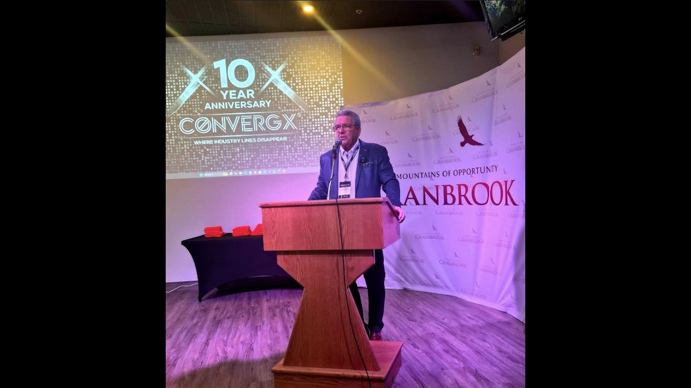

The party asking for an Xplore is a region.
A region hosts one with ConvergX, in its own city, for its own companies.
Everywhere else on this site the party asking is a company, carrying either a requirement or a capability.
Here the region is the one asking. That is usually an economic development office or a municipality, or whoever is answerable for whether local companies find work outside the region.
ConvergX composes the room from one economy.
What it isConvergX runs its convening in the region that asked for it.
The Congress composes a room across every industry ConvergX convenes. An Xplore draws its room from a single region's businesses, innovators and industry leaders.
What a region is usually after is its own companies taking their technologies, products and solutions into broader Canadian and global markets.
The work ConvergX does inside the room is the same as anywhere else. It asks the companies, and it decides which two of them should meet. How we vet
One region has already done it.
CranbrookThe City of Cranbrook hosted one with ConvergX in March 2026, on aerospace, defence and critical supply chains.
Leaders from academia, government and industry took part. ConvergX publishes a video of it.
ConvergX has also convened Xplore in Leduc, in Montana and in Mexico.

Play, on YouTubeConvergX also runs the format inside one organisation.
InternalSome companies want the convening internally rather than across a region, and ConvergX runs it for them inside the single organisation that asked.
What a region supplies and what ConvergX supplies is set one region at a time.
A region begins at the same door as every other enquiry.